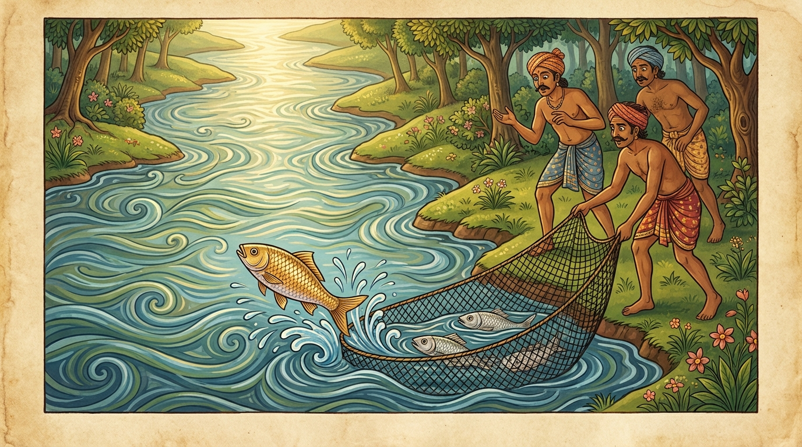

4. මිතචින්තී ජාතකය (114)
“බහුචින්තී අප්පචින්තී” යනාදී වශයෙන් ආරම්භ වන මේ ජාතක කථාව බුදුරජාණන් වහන්සේ ජේතවනාරාමයේ වැඩවාසය කරන සමයේ මහලු තෙරවරුන් දෙනමක් අරබයා දේශනා කළ සේක. කියනු ලබන පරිදි, ඔවුහු එක්තරා දනව්වක වන සෙනසුනක වස් වැස, “ශාස්තෘන් වහන්සේ දැකීමට යන්නෙමු” යි සිතා මාර්ගෝපකරණ සකසා ගත්හ. එහෙත් “අද යමු, හෙට යමු” යි කියමින් මසක් ඉක්මවා හැරියහ. නැවතත් මාර්ගෝපකරණ සකසා ගෙන එලෙස ම මසක් ද, නැවතත් මසක් ද වශයෙන්, තමන්ගේ කුසීත බව නිසාත්, සෙනසුන කෙරෙහි ඇති ඇල්ම නිසාත් මාස තුනක් ඉක්මවා හැරියහ. ඉන්පසු එයින් නික්ම ජේතවනයට ගොස්, තමන්ට සුදුසු තැනක පාත්ර සිවුරු තැන්පත් කොට බුදුරජාණන් වහන්සේ බැහැදුටුවහ. එකල්හි භික්ෂූහු ඔවුන්ගෙන්, “ඇවැත්නි, බුද්ධෝපස්ථානය සඳහා පැමිණීමට මෙපමණ කලක් පමා වූයේ මන්දැ?” යි විමසූහ. ඔවුහු ඒ කරුණ කීහ. එවිට ඔවුන්ගේ ඒ අලස කුසීත බව භික්ෂු සංඝයා අතර ප්රකට විය. දම් සභාවෙහි ද භික්ෂූහු ඔවුන්ගේ කුසීත භාවය අරබයා කථා මතු කළහ. බුදුරජාණන් වහන්සේ එහි වැඩම කොට, “මහණෙනි, මා එන්නට පෙර කවර කථාවකින් යුතුව සිටියහු ද?” යි විචාරා, “මේ නම් කථාවෙනැ” යි කී කල්හි, ඒ භික්ෂූන් කැඳවා, “මහණෙනි, නුඹලා සැබවින් ම අලස වූවෝ දැ?” යි විමසූ සේක. “එසේය ස්වාමීනි” යි කී කල්හි, “මහණෙනි, මොවුන් අලස වූයේත්, සෙනසුනෙහි ඇලී ගැලී සිටියේත් දැන් පමණක් නො වෙයි; පෙර ද මොවුහු අලස ව, සෙනසුනෙහි ඇලී ගැලී සිටියෝ ය” යි වදාරා අතීත කථාව ගෙනහැර දැක්වූ සේක.
අතීතයේ බරණැස් නුවර බ්රහ්මදත්ත රජු රාජ්යය කරන සමයේ බරණැස් ගඟෙහි මත්ස්යයෝ තිදෙනෙක් වූහ. බහුචින්තී (වැඩියෙන් සිතන්නා), අප්පචින්තී (අඩුවෙන් සිතන්නා) සහ මිතචින්තී (පමණට සිතන්නා) යනු ඔවුන්ගේ නම් විය. ඔවුහු වනාන්තර ප්රදේශයේ සිට මිනිස් වාසය ඇති ප්රදේශයට පැමිණියහ. එහිදී මිතචින්තී අනෙක් දෙදෙනාට මෙසේ කීවේ ය: “මේ මිනිස් වාසය භයානක ය; සැක සහිත ය. කෙවුලෝ විවිධ දැල් සහ කෙමිණි දමා මසුන් අල්ලා ගනිති. එබැවින් අපි නැවත වනාන්තරයට ම යමු.” එවිට අනෙක් මසුන් දෙදෙනා අලස බව නිසාත්, ආහාර ගිජු බව නිසාත් “අද යමු, හෙට යමු” යි කියමින් තුන් මසක් ඉක්මවූහ. දිනක් කෙවුලෝ ගඟට දැලක් දැමූහ. බහුචින්තී සහ අප්පචින්තී ගොදුරු සොයමින් ඉදිරියෙන් ගමන් කළහ. ඔවුහු තමන්ගේ මෝඩකම නිසා දැලේ ඉව නොදැන දැල තුළට ම රිංගා ගත්හ. මිතචින්තී මත්ස්යයා පසුපසින් එන්නේ, දැලේ ගඳ දැනගෙන, මොවුන් දැලට පිවිසි බව වටහා ගත්තේ ය. “මේ අලස, මෝඩයන්ගේ ජීවිත දානය දෙමි (ජීවිත බේරා දෙමි)” යි සිතා, දැලේ බඩ වැල ඇති තැනට පිටතින් ගොස්, දැල ඉරා දමා නික්මුණාක් මෙන් හඟවමින් දිය කළඹා, දැල ඉදිරියට පැන, නැවත දැල තුළට රිංගා, දැලේ පසුපස කොටස ඉරා දමා නික්මුණාක් මෙන් හඟවා දිය කැළඹී ය. එවිට කෙවුලෝ “මසුන් දැල ඉරා දමා පලා ගියෝ ය” යි සිතා දැල් කෙළවරින් අල්ලා එසවූහ. එකල්හි ඒ මසුන් දෙදෙනා ම දැලෙන් මිදී දියට වැටුණහ. මෙසේ මිතචින්තී නිසා ඔවුන්ට ජීවිතය ලැබුණි.

බුදුරජාණන් වහන්සේ මේ අතීත කථාව ගෙනහැර දක්වා, අභිසම්බුද්ධ වූ සේක් මෙම ගාථාව වදාළ සේක.
“බහුචින්තී සහ අප්පචින්තී යන දෙදෙනා ම දැලෙහි බැඳුණාහ. එකල්හි මිතචින්තී (තමාගේ නුවණින්) ඔවුන් මුදවා ගත්තේ ය. (අනතුරුව) ඒ දෙදෙනා එහිදී මිතචින්තී සමඟ එක් වූහ.”
එහි බහුචින්තී යනු, බොහෝ කොට සිතන බැවින් ද, විතර්ක බහුල බැවින් ද එසේ ලබන ලද නමයි. අනෙක් දෙදෙනා කෙරෙහි ද මේ නය (ක්රමය) ම වේ. උභො තත්ථ සමාගතා යනු, මිතචින්තී නිසා දිවි ලද ඔවුහු, නැවත ඒ දියෙහි දී මිතචින්තී සමඟ එක්වූහ යන අර්ථයි.
මෙසේ ශාස්තෘන් වහන්සේ මේ ධර්ම දේශනාව ගෙනහැර දක්වා චතුරාර්ය සත්යය ප්රකාශ කොට ජාතකය ගළපා දැක්වූ සේක. සත්ය දේශනාව අවසානයේ ඒ මහලු භික්ෂූන් වහන්සේලා සෝවාන් ඵලයෙහි පිහිටියහ. එකල බහුචින්තී සහ අප්පචින්තී වූයේ මේ භික්ෂූන් දෙදෙනා ය. මිතචින්තී මත්ස්යයා වූයේ මම ම වෙමි.
මිතචින්තී ජාතක වර්ණනාව (වග්ගයේ) සතර වැනි යි.